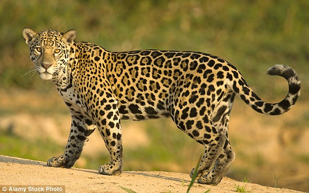

Jaguar
- Nombre comun: Jaguar
- Nombre cientifico: Panthera onca
- Origen: abarcaba desde el norte de Norteamerica hasta Uruguay y el norte de Argentina. Ha venido desapareciendo de partes de su territorio, en gran parte por causa de los seres humanos.
- Cantidad: 4
- Caracteristicas: El gato salvaje mas grande del Neotropico, con una longitud cabeza-cuerpo de entre 1.1-1.8 m, cola de unos 50-60 cm y peso de hasta 100-150 kg. Es un animal robusto, con grandes y fuertes patas y una cabeza grande y maciza. El pelaje, muy distintivo, tiene un fondo amarillento-cafe y está densamente salpicado con motas negras. Ocasionalmente se observan ejemplares completamente negros.
- Alimentacion: consistente en una gran variedad de animales, como dantas, venados, chiguiros, sainos, borugos, monos, tortugas, caimanes y peces.
- Reproduccion: La hembra da a luz entre 1 y 4 cachorros en una cueva o madriguera protegida y los cuida durante muchos meses. Cuando son grandes, los cachorros acompañan a su madre en sus correrias, aprendiendo las tecnicas de caceria.
- Estado de conservacion: Se encuentra en peligro de extincion.